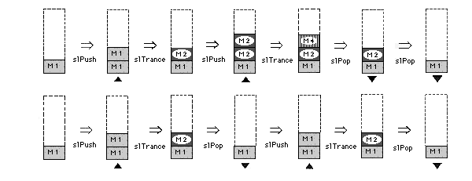

Return to previous page | Return to menu | Go to next page
Bool
Matrix function
Recalling a temporarily saved matrix
Bool slPopMatrix()
None
Returns one pointer of the matrix buffer.
If the matrix is not nested, the function returns FALSE.
The following figure is an image model of stack operation.

Reference: Chapter 5 Matrix
slPopMatrix